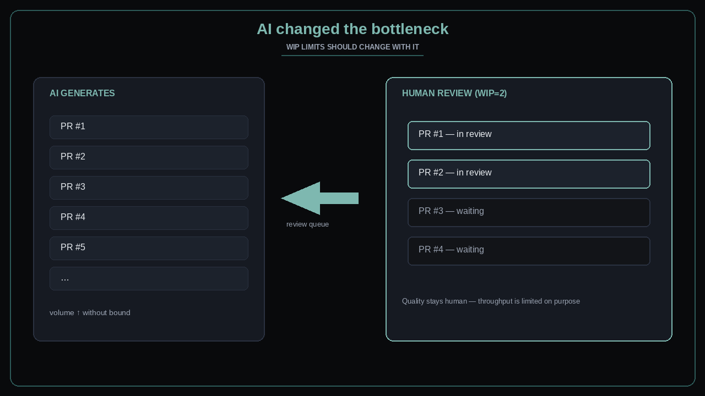

AI changed the bottleneck — update your WIP limits
Source: Scrum.org (@Scrumdotorg) · Mary Iqbal
original post
What it claims
AI can generate code faster than the team can review it, but the human in the loop remains essential for quality. Mary Iqbal (via Scrum.org): the bottleneck moved to review — so your work-in-progress limits should move with it. Unbounded generation without WIP on review makes humans the silent queue and quality the casualty.
Why it matters for a PO
POs feel pressure to “go faster with AI” while Sprint Review and Definition of Done still assume human inspection. If the Product Backlog floods with AI-drafted increments and nobody owns a WIP cap on review, you get throughput theater: more PRs, worse outcomes. Flow and quality are PO concerns, not only eng hygiene.
3 takeaways
- Generation speed ≠ delivery speed when review is the constraint.
- Keep humans in the loop for quality — and protect them with explicit WIP limits on review/inspection.
- Update policies (DoD, board columns, pull rules) when the bottleneck moves; do not keep pre-AI WIP numbers.
Practice this week
With the team, name the current review WIP (formal or de facto). If AI increased open PRs or drafts waiting on humans, cut review WIP to a number the team can finish in a day. Write one DoD or board rule that blocks starting new AI-generated work when review WIP is full. Inspect the queue length at the next Daily Scrum.